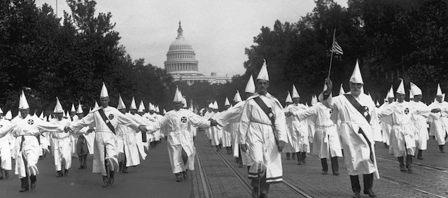

2019-03-27 08:00

Last week Margaret Kimberley, writing in Black Agenda Report, called out colonialism, the American police and carceral state, and militarism for what it all has in common — a license to kill people of color. Kimberley also sat down with KPFA to discuss her piece. I was taken with the scope and brevity of Kimberley’s piece, reprinted with her kind permission.
by Margaret Kimberley, Black Agenda Report
Zionism, manifest destiny, wars on terror, humanitarian interventions, and the Monroe and other doctrines always boil down to a license to kill.
Discussions about white supremacy should amount to more than kumbaya moments of interpersonal harmony or hand wringing when lone gunmen go on the periodic racist rampage. Self-identified white people have always posed dangers to every other group. Most of them living today haven’t carried out murder with their own hands but that does not mean that they or their countrymen and women can’t be held to account.
Donald Trump’s presidency complicates this discussion. The threats presented by his appeals to racists cannot be overstated. There is no dispute about his impact. Shortly after he was inaugurated a white supremacist shot and killed six people at a Montreal, Quebec mosque. The killer of 50 Muslim worshippers in New Zealand referred to Trump as “a symbol of renewed white identity and common purpose.”
But Trump isn’t the only white supremacist leader. White supremacy is the guiding force behind many atrocities committed around the world. Zionism is an example of white supremacy in action. But many of those who expressed shock after the New Zealand killings don’t question Israel’s apartheid system that could not be carried out absent the support of the United States and its allies.
White supremacy explains the willingness of many Americans to support the bipartisan project to carry out regime change in Venezuela and other nations. It is expressed as as positive, a humanitarian gesture meant to save the colored peoples of the world from themselves. The notion of a white man’s burden still exists in the 21st century.
The individuals who carry out these acts usually elicit greater scorn than the presidents and prime ministers who do the same thing. A televised speech claiming that a war is “humanitarian” gets support from the corporate media, conservatives, and liberals too. The unanimity of opinion is based on all the precepts that say white makes right. Zionism, manifest destiny, wars on terror, humanitarian interventions, and the Monroe and other doctrines always boil down to a license to kill. The victims are usually people from the global south and there is little objection when the perpetrator is the state itself.
The Australian killer who flashed the white power gang sign even as he appeared in court should not be seen as the only face of racism. Pointing fingers at him and others of his ilk lets too many people off the hook of responsibility.
His homeland of Australia is the embodiment of the ethno-nationalism that the shooter referred to in his manifesto. Europeans invaded Australia and nearly eradicated the aboriginal inhabitants. The entire indigenous population of Tasmania was wiped out by the settler population. The bigger shock is that there aren’t more mass killers from Australia and other nations that owe their existence to genocide.
The mosque killer regards the non-white immigrant as an invader when he is the one descended from the invading people. Candle light vigils may expiate guilt and bring momentary relief but they are a poor substitute for telling the truth about genocides carried out by European descended people around the world.
That is the white supremacy which must be always be discussed. That evil decimated the Iroquois and Lakota and Maori and Tasmanians and maintained a 300-year long slave trade. In a perverse twist the descendants of the genocidaires see themselves as the victims. Whenever a tipping point of color is surpassed the racists react with segregation, gentrification and outright murder.
This point may be the hardest to discuss. Trump is president precisely because he expressed the belief that this colonial settler state is for white people and they should do all they can to keep others out or under their control.
It is easy to express dismay when racist killers attack churches in Charleston, South Carolina or mosques in Quebec or New Zealand. It is harder for self-identified whites who think themselves enlightened to ponder difficult questions about wars and mass incarceration that are carried out in their names.
The maniac killers who use their own firearms are a symptom of a much bigger problem. White supremacy is normalized so much that is becomes like background music. It is ever present and subliminal.
The British tabloid newspaper Daily Mirror had a front page photo of the New Zealand killer as a toddler. The headline read, “Angelic boy who grew into evil, far right mass killer.” Angelic is an apt description for most small children. Every terrorist was once an angelic tot. But only the white ones are given humanity even after they kill. There should be no surprise when racism pushes the unhinged over the edge. They are given legitimacy long before they pick up a gun.
— Margaret Kimberley, Black Agenda Report
Note from David —
After the Christchurch massacre in New Zealand, Liberal talking heads and mainstream editorial pages pushed a message that violent White Supremacy and Christian Identity were aberrations set in motion by America’s racist president. Liberals walked back a previous characterization of American Main Street racists as “Deplorables,” casting them instead as innocents struggling with economic anxieties — nothing like the Lone Wolves who carry out mass murders. White Liberals could breathe a sigh of relief — we ourselves could not possibly be culpable.
But when a Muslim Congresswoman had the temerity to express criticism of Israel’s Apartheid-flavored “democracy”— one that killed more unarmed Palestinian demonstrators again this week — and questioned the role of AIPAC and the duplicity of politicians doing a better of job of representing Israel than their own country — the GOP and centrist Democrats attacked her. Yet the very first piece of legislation considered by the Senate, Bill S.1, includes what is in essence a loyalty oath to Israel and violates the First Amendment rights of Americans to boycott. After much waffling, House and Senate Democrats only half-heartedly defended fellow Democrat Ilhan Omar. Apparently crushing bipartisan economic sanctions on Venezuela and Iran are acceptable, while a consumer boycott of Israel must be regarded as nothing but anti-Semitism.
The current war on Venezuela is likewise part of the American imperial enterprise — one that began long ago, and was codified in the Monroe Doctrine. If you believe American aggression happens only under GOP administrations, review the history.
Finally, long before Trump was elected I noticed that mainstream Conservative publications are, in theme and message, virtually indistinguishable from those which directly call for genocide, race war, and ethnic cleansing. The spelling in mainstream Conservative publications may be better and the violent rhetoric may have been replaced with coded messaging, but the message is still the same. Since FOX is the #1 news channel in America, this is apparently what White American likes to hear, what it believes.
It ought to be pretty clear that all this is a white people problem — a problem created by the demographic that wrote our laws and is determined to preserve its political and economic advantages at all cost. And this is a mess we white people are responsible for cleaning up. It is nothing but hypocrisy to claim we support human and civil rights while actually supporting colonial invasions, occupations and repressive “law and order” measures that include police killings and mass incarceration.